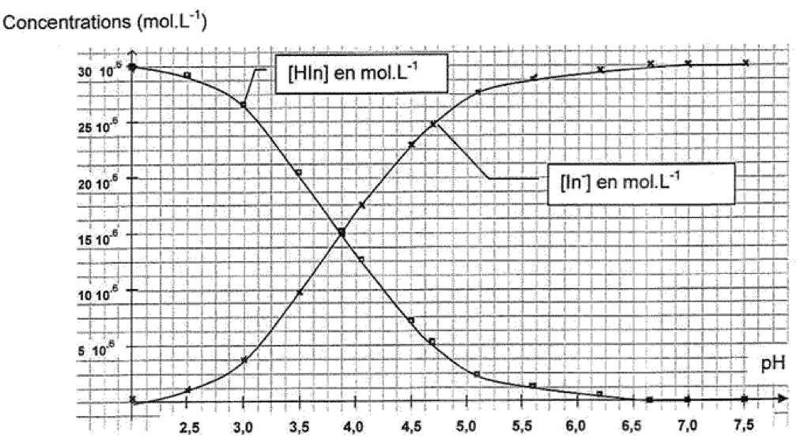

Le bleu de bromophénol est un indicateur coloré dont la forme acide, notée $\ce{HIn}$, est jaune et dont la forme basique, notée $\ce{In^−}$, est bleue.
- Préparation de la solution mère :
- On prépare, dans une fiole jaugée, deux litres d’une solution mère $S_0$ de bleu de bromophénol de concentration molaire en soluté apporté $C_0 = \pu{3,0e-5 mol.L-1}$.
Première partie : Étude de la solution mère
On considère un volume $V = \pu{100 mL}$ de solution $S_0$ dont le pH est de 4,7.
-
Calculer la quantité de matière de bleu de bromophénol $n_0$ initialement introduite dans $\pu{100 mL}$ de solution $S_0$.
-
Donner la définition d’un acide selon Brønsted.
-
L’équation de la réaction de $\ce{HIn}$ avec l’eau est : $$ \ce{HIn (aq) + H2O <=> In^− (aq) + H3O+} $$ Donner les couples acide-base intervenant dans cette équation.
-
Établir un tableau d’avancement de la réaction faisant intervenir les états initial (avancement nul), intermédiaire (avancement $x$), final (avancement final $x_f$), final hypothétique (avancement maximal $x_{\text{max}}$).
-
Calculer l’avancement maximal $x_{\text{max}}$.
-
Calculer l’avancement final de la réaction $x_f$.
-
En déduire le taux d’avancement final. La transformation chimique modélisée par cette réaction est-elle totale ?
-
En utilisant la ligne décrivant l’état intermédiaire du tableau d’avancement, justifier que pour toute valeur de l’avancement $x$ on a la relation : $$ n(\ce{HIn}) + n(\ce{In^−}) = n_0 $$
-
En déduire la relation qui relie les concentrations molaires effectives des espèces présentes en solution et la concentration $C_0$.
Deuxième partie : Étude de deux solutions
On prépare deux solutions à partir de la solution mère $S_0$.
- Préparation de la solution $S_1$ :
- À un litre de la solution mère $S_0$ on ajoute $\pu{1,0e-2 mol}$ d’ions oxonium $\ce{H3O+}$ en utilisant de l’acide chlorhydrique concentré.
L’addition d’acide chlorhydrique se fait sans variation appréciable du volume de la solution.
La solution $S_1$ obtenue est jaune, de $\text{pH} = \pu{2,0}$ et de concentration molaire en bleu de bromophénol apporté $C_0 = \pu{3,0e-5 mol.L-1}$. - Préparation de la solution $S_2$ :
- À un litre de la solution mère $S_0$, on ajoute $\pu{1,0e-2 mol}$ d’ions hydroxyde $\ce{OH−}$ par ajout d’une solution d’hydroxyde de sodium concentrée.
L’addition de la solution d’hydroxyde de sodium se fait sans variation appréciable du volume de la solution.
La solution $S_2$ obtenue est bleue, de $\text{pH} = \pu{12,0}$ et de concentration en bleu de bromophénol apporté $C_0 = \pu{3,0e–5 mol.L-1}$.
Pour les deux solutions $S_1$ et $S_2$ on admet la relation : $$ [\ce{HIn}] + [\ce{In^−}] = C_0 $$ $[\ce{HIn}]$ et $[\ce{In^−}]$ désignant les concentrations effectives des formes acide et basique.
-
Quelle espèce chimique du couple de l’indicateur coloré prédomine dans la solution $S_1$ ? dans la solution $S_2$ ?
-
De quel paramètre dépend la proportion d’acide et de base conjuguée dans chaque solution ?
-
Pour la solution $S_2$, on émet l’hypothèse que la concentration effective de la forme acide $\ce{HIn}$ est négligeable.
Quelle est alors la valeur de la concentration effective de la forme basique $\ce{In^−}$ ?
Troisième partie : Étude spectrophotométrique
- Protocole suivi :
- Dans un bécher contenant un volume quelconque de la solution $S_1$, on ajoute de la solution $S_2$ de façon à obtenir successivement des solutions dont les pH sont donnés
dans le tableau ci-dessous.
Lorsqu’une solution de pH donné est réalisée, on mesure par spectrophotométrie l’absorbance $A$ du mélange.
À la longueur d’onde $\lambda$ utilisée par le spectrophotomètre, seule la forme basique $\ce{In^−}$ absorbe.
On obtient les résultats suivants :
| pH | 2,0 | 2,5 | 3,0 | 3,5 | 3,9 | 4,1 | 4,5 |
|---|---|---|---|---|---|---|---|
| $A$ | 0,02 | 0,06 | 0,21 | 0,54 | 0,85 | 1,02 | 1,22 |
| pH | 4,7 | 5,1 | 5,6 | 6,2 | 6,7 | 8,0 | 12 |
| $A$ | 1,37 | 1,53 | 1,59 | 1,63 | 1,66 | 1,66 | 1,66 |
On admet que, pour toutes les solutions obtenues par mélange des solutions $S_1$ et $S_2$ en proportions quelconques :
-
la concentration molaire en bleu de bromophénol apporté est $C_0 = \pu{3,0e-5 mol.L-1}$.
-
$[\ce{HIn}] + [\ce{In^−}] = C_0$.
-
Montrer que l’absorbance $A$ d’un mélange quelconque est donnée par : $$ A = k\, [\ce{In^−}] $$
-
Pour la solution $S_2$ de $\text{pH} = \pu{12,0}$ l’absorbance est maximale.
Montrer que l’absorbance maximale $A_{\text{max}}$ et la concentration molaire en bleu de bromophénol apporté $C_0$ vérifient la relation : $$A_{\text{max}} = k\, C_0$$ En déduire la valeur du coefficient $k$ et préciser son unité. -
Calculer les concentrations effectives des espèces In– et $\ce{HIn}$ présentes dans le mélange lorsque l’absorbance $A$ de celui-ci est égale à $\pu{0,83}$.
L’exploitation des données expérimentales a permis de construire le graphique ci-dessous donnant les concentrations des espèces $\ce{HIn}$ et $\ce{In^−}$ en fonction du pH.

-
Déterminer à partir de ce graphique les domaines de prédominance des formes acide et basique du bleu de bromophénol.
-
Donner la relation entre $\text{pH}$, $\text{pK}_a$, $[\ce{HIn}]$ et $[\ce{In^−}]$.
-
En déduire qu’un point particulier de ce graphique permet de déterminer le $\text{pK}_a$ du couple étudié.
Donner sa valeur. -
Vérifier par un calcul que l’hypothèse émise dans la question 12. est légitime.